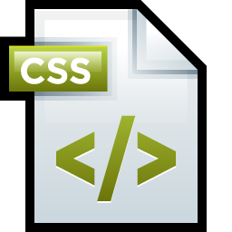

HTML (Hypertext Markup Language), en estado de borrador, es publicado por Tim Berners-Lee en la lista de correo www-talk.
(28 de noviembre de 1991)
El protocolo HTTP es introducido por Tim Berners-Lee HTTP, siendo parte de la especificación para la WWW, HTTP forma de comunicación entre clientes (navegadores web) y servidores.
(30 de abril de 1993 )
El CERN establece la web como objeto de dominio público, lo cual asegura su próxima evolución como estándar libre y abierto.
(8 de Junio de 1995 )
Rasmus Lerdorf lanza públicamente su paquete "Personal Home Page Tools" (o simplemente PHP Tools para abreviar).
(18 de septiembre de 1995)
JavaScript es lanzado, fue desarrollado originalmente por Brendan Eich en los meses anteriores, JavaScript ofrece a los desarrolladores una forma sencilla de acceder al DOM .
(24 de noviembre de 1995)
HTML 2.0 se publica como IETF RFC 1866 e incluye elementos de iteraciones anteriores de especificaciones HTML junto con algunas nuevas. Seguiría siendo la última especificación hasta enero de 1997.
(17 de diciembre de 1996)
Håkon W. Lie propone CSS 1 con el fin de agregar estilo a las páginas web.

(14 de enero de 1997)
HTML 3.2 Tras el abandono oficial de HTML 3.0, el W3C redacta y publica HTML 3.2 como recomendación oficial.
(10 de febrero de 1998)
El W3C publica una especificación para XML, una forma de estructurar datos legibles tanto por máquinas como por ordenadores. XML se utiliza mucho en los servicios web y permite a servidores y clientes transmitir información de un lado a otro mediante programación.
(15 de marzo de 1999)
Netscape lanza la primera versión de RSS, la cual permite a los editores englobar sus contenidos y a los lectores obtener contenidos de múltiples fuentes en un solo lugar.
(26 de enero de 2000)
Tras la publicación de HTML 4.01, el W3C se centra en XHTML, un estándar que combina la sintaxis y las reglas de XML con las propiedades de HTML. XHTML aplica estrictamente su conjunto de reglas, lo que lo hace interoperable, pero más difícil de implementar en los navegadores.